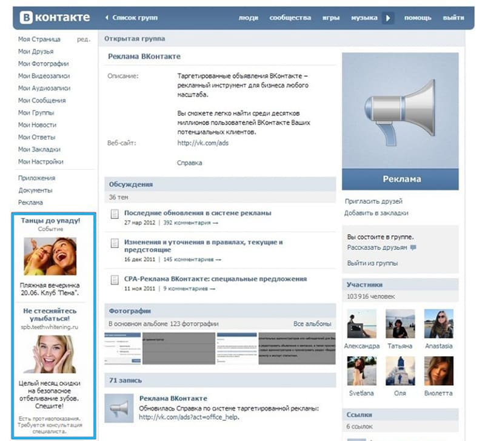
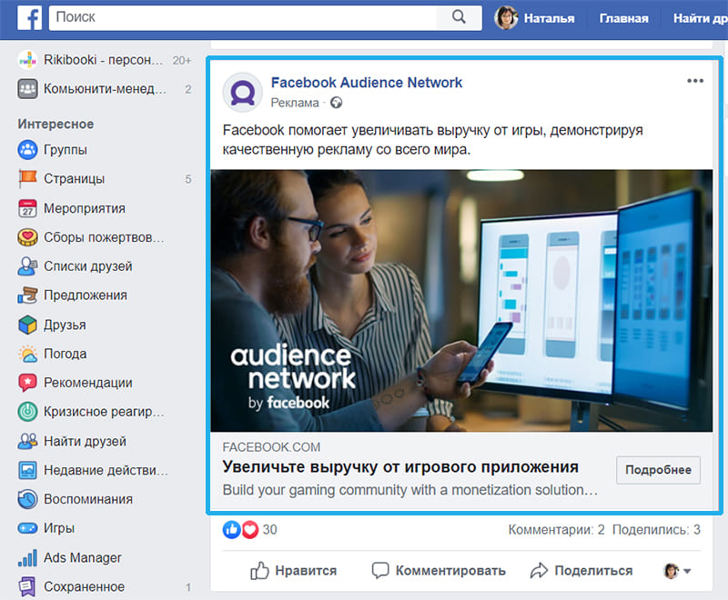
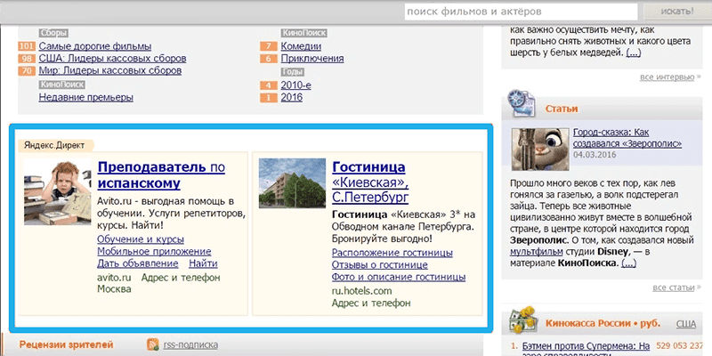
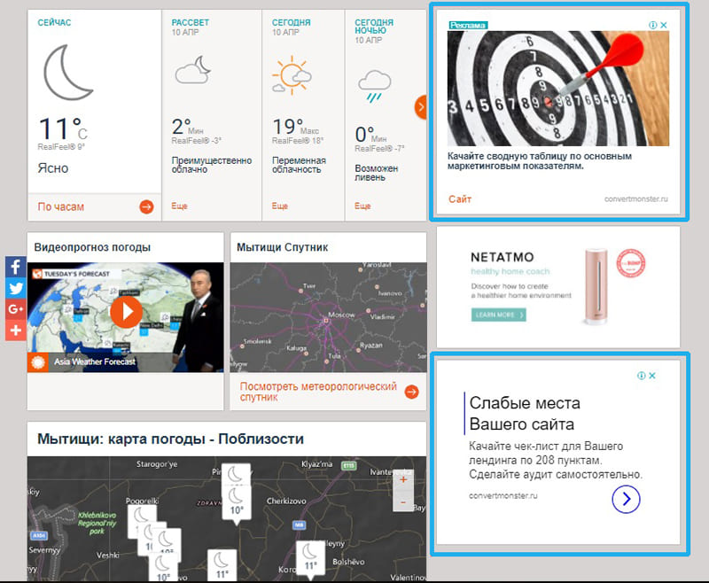
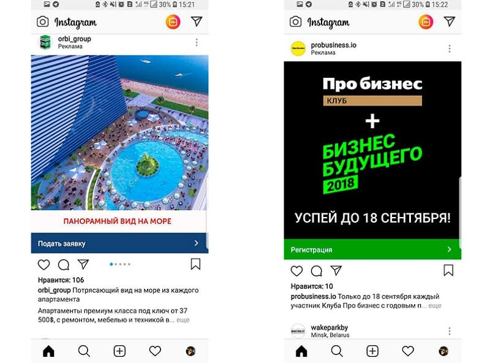
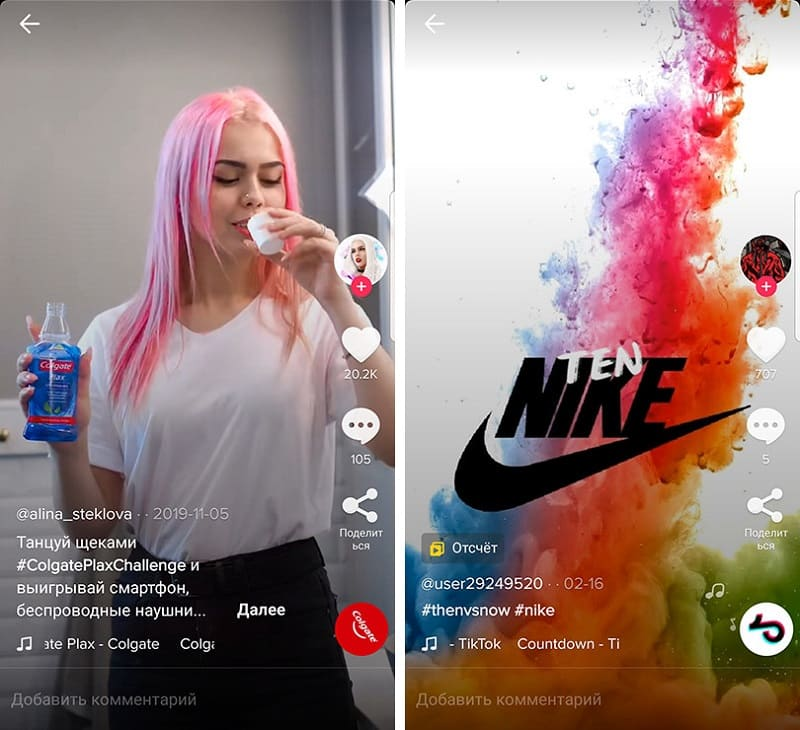
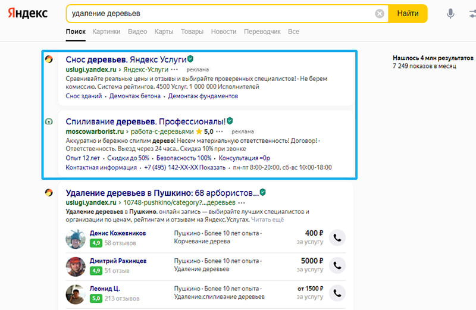
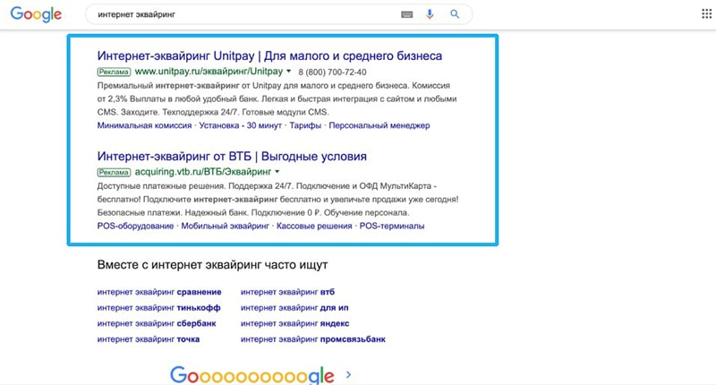

Что такое таргетинг? Это один из наиболее популярных разновидностей рекламы в интернете в наше время. Низкая стоимость, простота настройки, высокие показатели роста посещаемости и продаж – все это делает таргетированную рекламу повсеместно востребованной у рекламодателей и у пользователей. В этой статье мы расскажем о ее секретах, предназначении, особенностях настройки на конкретных примерах, разберемся, где, как, в какое время лучше показывать рекламу пользователям.

Что такое таргетированная реклама
Слово «таргетированная» появилось от английского «target» - цель. Автор термина неизвестен. Это реклама, цели для которой тщательно подбираются. До появления интернета маркетологи были стеснены в средствах аналитики, поэтому рекламу делали по принципу «чем больше людей увидит, тем лучше». Недостаток такого метода в том, что если вы продаете, например, детские подгузники, то ваша реклама заинтересует только родителей. Если у человека нет маленьких детей, то не имеет значения, увидит он рекламу или нет, в любом случае покупку он не совершит, т.к. продукт для него совершенно бесполезен.
Идеальная реклама – та, которую показывают только пользователям, которые относятся к целевой аудитории, т.е. людям, заведомо заинтересованным в покупке товара или услуги, имеющим соответствующие потребности. Это и есть таргетинг.
Целевая аудитория для таргетинга определяется с помощью анализа данных и действий пользователя в сети и на конкретной площадке. Алгоритмы соцсетей анализируют ваши действия – лайки, просмотры, подписки, личную информацию, и на их основе подбирают контент (статьи, видеоролики, записи и другие материалы), который скорее всего вам понравится, включая коммерческие предложения. Таким образом, таргетинговую рекламу показывают не вслепую, а только тем пользователям, кто интересуется похожими товарами или услугами, или может ими заинтересоваться в виду принадлежности к целевой аудитории по ключевым характеристикам (возраст, пол, место жительства, профессия, интересы и т.д.).
Как работает таргетированная реклама в соцсетях
Основной информацией о себе с интернет-ресурсами вы делитесь сами. Например, когда заполняете профиль ВКонтакте, вам предлагают указать пол, возраст, место жительства, место работы, данные об образовании, о семейном положении. Еще вы разрешаете приложениям площадки отслеживать геолокацию, так они узнают о ваших передвижениях. Если вы часто путешествуете по миру, системы аналитики делают вывод, что вы – состоятельный человек. Если же выходите из дома изредка и не дальше магазина, другой вывод – домосед, и так далее. Любые данные о предпочтениях, которые можно собрать с целью подбора рекламного объявления, которые могут таргетироваться, система соберет и разделит на 7 категорий данных:
{kind=link}
- Демографические. Пол, возраст, национальность, уровень дохода, занятость, образование.
- Психографические. Интересы, ценности, мнения, образ жизни.
- Поведенческие. Что делает на сайте, история покупок, история запросов, история переходов и т.д.
- Временные. Время активности на основе действий в интернете, посещения определенной площадки и изменения геоданных.
- Географические. Место жительства от страны и области до улицы, место работы, география перемещений на основе геоданных телефона (геотаргетинг).
- Технические. Характеристики гаджетов пользователя. По этому параметру можно сделать выводы об уровне дохода, а также предлагать совместимую электронику и аксессуары.
- Внешние. Определение пользователей, не входящих в целевую аудиторию, но похожих на нее. Технология look-alike.
Данные собираются системой обо всех пользователях автоматически. Когда на платформу приходит рекламодатель со своим продуктом или услугой, ему предлагается возможность задать настройки таргетинга рекламных объявлений под себя, чтобы он срабатывал по конкретным типам данных. Вот почему маркетинг в соцсетях так эффективен.
Цели и задачи таргетированной рекламы
Таргетированная реклама выполняет или способствует выполнению большого количества задач. Сюда относятся все стандартные задачи рекламы и добавляются специфические, которые не могут быть выполнены с помощью других разновидностей рекламы. Например, таргетированная реклама поможет работать только с ЦА, максимально избегая показов незаинтересованным в приобретении товара или услуги людям. Это делает возможным исследование целевой аудитории на основе данных о том, как пользователи взаимодействуют с рекламными материалами.
{kind=link}
- Рост продаж за счет оптимизации рекламы.
- Экономия рекламного бюджета (средняя стоимость кампании ниже, если реклама целевая).
- Обучение потребителей использованию определенного продукта или услуги.
- Привлечение и удержание внимание целевой аудитории.
- Формирование хорошего впечатление о товаре у потребителя.
- Привлечение внимания определенного узкого сегмента ЦА.
- Создание условий для быстрого взаимодействия с магазином.
- Формирование клиентской базы.
- Быстрое информирование о продукте с возможностью продолжить ознакомление на сайте (узнать больше).
- Создание возможности для немедленного совершения определенного целевого действия.
- Сбор качественных лидов.
- Проведение маркетинговых исследований в рамках определенной кампании.
- Проведение сегментации ЦА.
- Повышение конверсии.
- Продвижение в ПС (пользовательских системах).
- Минимизация нагрузки на персонал.
В чем разница между контекстной и таргетированной рекламой
Контекстную рекламу показывают поисковики, она основывается на ваших поисковых запросах. Например, если пользователь ищет через Google и Яндекс информацию о недорогих ноутбуках в Москве, то в рекламных блоках поисковой выдачи он увидит предложения магазинов. Также на всех сайтах, где есть блоки рекламы Яндекса и Гугла, пользователь будет видеть предложения, основанные на его поведении на сайте в реальном времени с учетом тематики сайта. Отсюда и название «контекстная реклама» - система правильно подбирает рекламное объявление, основываясь не на отдельных личностных характеристиках пользователя (возраст, пол, интересы, размер зарплаты), а на контексте происходящего в данный момент. Ваш рекламный блог выглядит в соответствии с представлениями системы о ваших интересах.
Таргетированная реклама анализирует не то, как пользователи себя ведут в реальном времени, а разностороннюю информацию о них. Что это за информация, мы подробно изложили выше, в разделе «как работает таргетированная реклама». Эти объявления показывают не поисковики, а социальные сети, которые имеют возможность собирать больше данных о пользователях, чем поисковики, благодаря специфике взаимодействия с пользователем. Пользователи, чтобы пройти регистрацию, сами рассказывают системе о своем возрасте, образовании, предпочтениях и каждый день или неделю добавляют информацию лайками, просмотрами, комментариями, формированием списка друзей, вступлением в группы и прочей активностью.
Виды и форматы таргетированной рекламы
Виды таргетированной рекламы – это разновидности критериев, по которым осуществляется сегментация ЦА для последующих показов объявлений. Форматы таргетинга – это способ или форма подачи рекламного материала.
Виды таргетинга
{kind=link}
- Тематический.
- Географический.
- Расширенный географический.
- Временной.
- Социально-демографический.
- Поведенческий.
- Частотный.
- Локальный.
- Мобильный.
- По теме интересов.
- По языку.
- По устройствам (типу, ОС и виду подключения к интернету).
- По целям рекламы.
- По ключевым словам.
Форматы таргетинга
{kind=link}
- Универсальная запись, пост в блог. Самый популярный и эффективный формат объявлений – запись на стене, в группе или в ленте. Можно добавить объемный текст объявления и кнопку целевого действия (например, чтобы перейти на сайт, открыть статью, оставить заявку, отправить данные, зарегистрировать аккаунт, стать подписчиком, заказать звонок, писать отзыв и т.д.).
- Карусель. В одном объявлении можно показать сразу несколько карточек товаров с возможностью прокрутки. Самый лучший вариант объявления для магазина.
- Реклама в Stories. В отличие от предыдущих вариантов, рекламное объявление показывается на весь экран - это главная фишка.
- Форматы для десктопа. В разных системах есть разные рекламные форматы объявлений для десктопных версий, использующие возможности большого экрана ПК – блоки, колонки и т.д.
- Lead Ads. Обычно лиды собирают на сайте, но не у каждого рекламодателя есть сайт, зачатую для малого бизнеса он и не нужен. Lead Ads – это форма для ввода пользовательских данных, она помогает собирать лиды прямо в соцсетях, без потери времени.
Сколько стоит таргетированная реклама
Стоимость рекламы не бывает фиксированной, она складывается из многих факторов и, как правило, оказывается разной у разных рекламодателей в разных кампаниях. Различаются также варианты оплаты рекламы. Приведем самые популярные примеры:
- CPC (cost per click) – расчет оплаты из цены за 1 клик.
- CPM (cost per millennium) – за тысячу показов объявления.
- CAC (customer acquisition cost) – цена одного клиента.
- CPA (cost per action) – за выполненное целевое действие (например, подписаться на рассылку или присоединиться к партнерской программе).
- CPI (cost per install) – за каждую установку программы.
- CPO (cost per order) – за каждое оформление заказа.
- CPL (cost per lead) – за лид.
- CPF (cost per follower) – за подписчика.
- CPV (cost per view) – за просмотр.
Какой бы вариант вы ни выбрали, итоговая цена будет зависеть во многом от популярности целевой аудитории. Реклама продается по принципу аукциона: чем больше желающих попасть в конкретную аудиторию, тем выше цена тысячи целевых действий, тем дороже обойдется кампания, тем сложнее будет ее запускать.
Вы можете самостоятельно устанавливать лимиты действий, которые готовы оплачивать в ВКонтакте, Facebook, Instagram, myTarget и т.д., чтобы не уйти в минус, если действие будет совершено слишком много раз. Однако многие площадки устанавливают минимальные требования к стартовому бюджету рекламной кампании. Это значит, что настройки ниже определенной суммы выставить не получится.
Примеры таргетинга
Таргетированная реклама может отличаться в зависимости от специфики товаров. Рассмотрим следующие кейсы, как запустить таргетинг для B2С и B2В сегментов.
|
Сегмент бизнеса |
В2С |
В2В |
|
Род деятельности |
Производитель мебели |
Продажа онлайн-касс |
|
Целевая аудитория |
Мужчины и женщины от 40 лет, владельцы дач и загородных домов, недавно совершили покупку или сделали ремонт. |
Интернет-магазины, службы доставки, розничные оффлайн-магазины, рестораны. |
|
Каналы взаимодействия |
Сайт, соцсети, шоурумы. |
Сайт, почтовая рассылка, вебинары. |
|
Ежемесячный трафик |
300 000 пользователей. |
150 000 пользователей. |
|
Ежемесячное количество заказов |
3000, конверсия 1%. |
7500, конверсия 5%. |
|
Цели таргетинга |
Увеличить заказы до 4000. |
Повысить ежемесячный трафик вдвое. |
Пример плана для В2С
- Настроить рекламу в популярных у ЦА соцсетях. В данном случае это Facebook и Одноклассники.
- Поставить конкретную цель – повышение конверсии.
- Сегментировать аудиторию на небольшие группы. Пользователи обоих полов от 40 лет, место жительства – Москва, интересует мебель для загородных домов, экологичная, надежная, стильная, ручной работы.
- Выбрать бюджет, определить дедлайны. 700 тыс. рублей на 3.5 месяца.
- Подготовить материалы. Видеоформат, в кадре мебель, предложение 15% скидки каждому новому клиенту.
- Старт рекламной кампании и мониторинг результатов. Аналитика показала рост трафика на 50 тыс. пользователей и покупок на 100 в месяц, конверсия упала на 0.2%.
- Вывод. Падение конверсии связано с возросшим количеством обращений в службу поддержки, которая не справилась с наплывом новых пользователей. Вторая причина – отсутствие лидогенерации. Многие пользователи посетили сайт, но не оставили контакты.
- Решение. Используйте оптимизацию службы поддержки, подключение чат-бота на сайте компании чтобы привлечь и собрать больше лидов с его помощью.
Пример плана для В2В
- Настроить рекламу в Яндекс.Директ и Google Adwords. Задача – запустить рекламу по ключевым словам с целью перехватить клиентов, когда они будут искать товары через поиск.
- Поставить конкретную цель. Пример - увеличить вдвое трафик за следующий месяц.
- Сегментировать аудиторию на небольшие группы. Предприниматели от 30 лет, интересы – бизнес, SMM, инновации, старт бизнеса, современные методы ведения бизнеса, курсы по бизнесу - нужно выделить самое важное.
- Выбрать бюджет, определить дедлайны. 6 месяцев, 600 тыс. рублей.
- Подготовить материалы. Рекламные баннеры, предложение скидки 25% на установку.
- Старт рекламной кампании и мониторинг результатов. Трафик вырос на 20 тыс. пользователей. Заказы – на 1.5 тыс. Конверсия – на 0.4%.
- Вывод. Трафик растет медленнее, чем ожидалось, но вместе с ним растет конверсия, чаще покупают.
Как настроить таргетированную рекламу
Процесс настройки таргетинга непосредственно в рекламном кабинете зависит от выбранной платформы, там всегда есть подробные гайды или инструкции, читайте их внимательно. Но прежде чем вы подойдете к настройке, нужно проделать огромную работу по подготовке, а после настройки нужно понимать, что делать дальше. Ниже рассказываем, что нужно делать, чтобы создать рекламу с абсолютного нуля.
12 этапов создания таргетированной рекламы с нуля
{kind=link}
- Изучите процесс размещения – правила, способы, специфику.
- Оцените рекламу конкурентов, найдите сильные и слабые стороны.
- Изучите целевую аудиторию, выберите ключевые сегменты, составьте портрет клиента и его интересов.
- Определите, какие ценности будете транслировать.
- Разработайте дизайн объявления.
- Настройте параметры целевой аудитории для показов.
- Придумайте креативную идею.
- Напишите текстовую часть – заголовок и основной текст.
- Определите стоимость и вариант оплаты.
- Подготовьте к продажам сайт компании или страницы компании в социальных сетях.
- Подключите и настройте инструменты аналитики для отслеживания результативности.
- Проводите работу над ошибками, оптимизируйте настройки, проверяйте новые гипотезы.
Как сделать таргетированную рекламу интересной
{kind=link}
- Сделайте рекламное объявление адресным. Если вы знаете целевую аудиторию и ее интересы, персонализировать объявление довольно просто. Для этого можно упомянуть название города, в котором живет потенциальный клиент, упомянуть боль, ключевые проблемы и сразу предложить решение. Не лишним будет предложить подобрать персональную скидку по акции, бонусы за обратную связь и т.д.
- Видео или stop motion. При наличии хорошей идеи, видеоформат является самым привлекательным способом донести послание до потребителя. При создании видео, важно уделить особое внимание первым трем секундам ролика, т.к. их гарантированно посмотрит 90-100% пользователей. Недостатком видеорекламы является дороговизна производства. Если не хватает бюджета, можно сделать анимированный ролик в формате stop motion. Время создание такого ролика составляет несколько часов, а цена начинается от 1 тыс. рублей.
- Реальный отзыв. Современный человек смотрит на рекламные ролики всю жизнь, он давно привык не верить красивым картинкам и текстам рекламных объявлений. Но доверие к таким же людям, как он сам, он пока не утратил. Поэтому, если вместо текстовой строки или актера в рекламном ролике используется отзыв обычного пользователя, который делится своим мнением, это резко повышает вероятность досматривания. Не забудьте спросить разрешение на использование отзыва в рекламных материалах.
- Геймификация. Игровую рекламу можно сделать даже из карусели в таргетинге. Она отлично привлекает внимание и оставляет хорошие ассоциации. Если пользователь связывает ваш бренд с приятными впечатлениями от игры, его будет проще вовлечь в процесс взаимодействия.
- Лид-формы. Благодаря лид-формам можно получить все преимущества полноценного лендинга прямо на странице социальной сети. Идеально, если у вашей компании нет сайта, его не успели подготовить или качество оставляет желать лучшего.
Что учитывать при настройке таргетированной рекламы
{kind=link}
- Цель. Чем конкретнее вы понимаете цель, тем лучше. Это может быть привлечение клиентов оффлайн, сбор лидов, сбор заказов, информирование о продукте, привлечение подписчиков, напоминание о бренде покупателям.
- Портрет клиента. Необходим для точной настройки и для понимания, как персонализировать объявление, превратить его в личное обращение, а не в абстрактный рекламный текст.
- Карта путешествия клиента. Это инфографика, отражающая весь путь отношений между покупателем и брендом от знакомства и до покупки. Она подробно разбирает все шаги до приобретения товара и дает возможность лучше проработать каждый шаг.
- Платформа и ее особенности. Иногда целевая аудитория сосредоточена в большей степени в одной конкретной социальной сети. Например, инстаграм – это соцсеть, ориентированная на фотоконтент, соответственно, там удобнее продвигать косметику и модную одежду, т.к. пользователям легче следить за трендами именно там. Но это не значит, что выбирать следует только одну соцсеть. Если позволяет рекламный бюджет, лучше позаботиться о максимальном охвате.
- База контактов. Все ваши текущие клиенты – это «теплая аудитория». Постарайтесь ориентироваться на них при настройке рекламы. Для этого нужно собрать максимум данных о клиентах в один документ.
- Вариант оплаты. Подробно расписаны в разделе «сколько стоит таргетированная реклама».
Особенности и настройки таргета на основных рекламных площадках
Вкратце о принципах работы самых популярных площадок с возможностью запуска таргетированной рекламы.
myTarget
Платформа создана специально для запуска таргетированной рекламы на проектах Mail.ru Group. Отличается поддержкой большого количества форматов объявлений, среди которых:
- баннеры – простые графические объявления;
- тизеры – объявления в фомате «картинка + текст + заголовок»;
- нативные блоки – картинка, текст и заголовок, отображающиеся как в десктопных версиях, так и в мобильных: вы добавляете компоненты, платформа само подгоняет их под параметры показов;
ВКонтакте
Реклама ВКонтакте предоставляет два варианта объявлений: в ленте новостей и на страницах сайта (в левой части экрана). По состоянию на сегодняшний день Вконтакте является самой популярной социальной сетью в России.

Вторая по популярности социальная сеть в России. Настроить таргетинг можно через собственный инструмент – Ads Manager. Настройка таргетинга простая и интуитивно понятная. Модерация может занимать до суток, но на практике занимает гораздо меньше времени.

РСЯ и КМС Google
Это рекламная Сеть Яндекса, позволяющая настраивать рекламу и получать клики в трех форматах объявлений – баннер (доступно множество вариантов), видеоролики для КиноПоиска и сайтов партнеров, аудио для Яндекс Музыки.

Google предоставляет 5 форматов объявлений: текстовый со ссылкой, реклама в Gmail, баннер, реклама в мобильных приложениях, мультимедийная реклама (в т.ч. видеоролики).

Третья по популярности соцсеть в России. Рекламу можно запустить из Facebook или с сайта Instagram. Чтобы запустить рекламную кампанию, нужно иметь бизнес-аккаунт (переключается в настройках). Объявления доступны в форматах фото, видеороликов, подборок и закольцованных галерей.

Tik-Tok
Самый популярный вариант рекламы в Tik-Tok – In-feed Native Video. Это видеоролик, всплывающий в ленте. Внешне он ничем не отличается от стандартного «тиктоковского» короткого видео длительностью до 60 сек, что делает рекламу таким же объектом внимания, как и сами видео ленты.

Яндекс.Директ
Можно сегментировать ЦА через раздел «Яндекс Аудитория». Предлагается широкий инструментарий для настройки сегментов. Много плюсов, в их числе возможность не показывать объявление холодным контактам. Из минусов особо можно отметить сложный интерфейс.

Google Ads
Множество настроек не только контекстной, но и таргетированной рекламы по аудитории. Поддерживает look-alike и ретаргетинг. Есть минус: если для части ЦА продукт уже не актуален, исключить ее будет проблематично.

Инструменты таргетинга
Ретаргетинг
Это повторный показ рекламного объявления тем, кто уже был на сайте компании или совершал покупки. Это имеет смысл, т.к. до 96% посетителей сайта компании уходит, так и не совершив покупки. Ретаргетинг позволяет частично решить проблему - вернуть часть этих людей и превратить их в клиентов. Он также служит напоминанием для тех, кто имел интересы и намерения сделать покупку, но не сделал вследствие тех или иных дополнительных причин – не было денег, были более важные задачи, отвлекли, забыл и т.д.
Ретаргетинг бывает:
- статическим – рекламу показывают тем, кто посещал ваш сайт, без персональных настроек – обычная реклама;
- динамическим – это показ рекламы на основе действий пользователя. Например, если пользователь на вашем сайте просматривал карточки летних кроссовок, ему будут показаны именно предложения летних кроссовок, независимо от того, какие еще типы товара есть на вашем сайте и сколько их.
Парсинг
Сервисы, использующие открытые источники для сбора и систематизации пользовательских данных, называются парсерами, а сам процесс – парсингом. Таргетированная реклама может опираться на парсинг, т.к. это хороший способ изучить ЦА.
Look-alike
Благодаря look-alike можно расширить целевую аудиторию. Технология позволяет находить пользователей, которые похожи на ваших текущих клиентов по интересам и ряду других признаков. Таким образом, показы рекламы адресуются тем, кто не относится к целевой аудитории, но с большой долей вероятности заинтересуется предложением.
23 сервиса для работы с таргетированной рекламой
- Hiconversion – сервис для работы с ВКонтакте и myTarget.
- Adlabs Target – закрытая платформа для управления рекламой ВКонтакте и myTarget.
- Aori – управление таргетингом в Google, Яндекс, Рамблер, Mail.ru, ВКонтакте, Facebook. Все площадки в одном окне.
- Atuko – автоуправление и массовое редактирование кампаний для myTarget, Facebook, ВКонтакте.
- Marilyn – управление, настройки, аналитика. Для платформ Google, Mail.ru, Weborama Adfox, Яндекс, Facebook, Instagram, External Data, Calltracking.
- Oneretarget – автоматизация, шаблоны, аналитика, расширенная статистика. Платформы ВКонтакте, Facebook, Instagram, myTarget, Google.
- Plarin – редактирование, сегментация, подготовка графических отчетов для myTarget.
- Sociate.Targeting – отложенный постинг, пользовательские шаблоны, биддер. Платформы ВКонтакте, Instagram, Facebook, Telegram, Twitter, Одноклассники.
- Искандер – автоматизация и сбор статистики для платформ Одноклассники, Мой Мир, ВКонтакте.
- Kairos – аналитика, автосегментация, автосоздание объявлений для ВКонтакте и Facebook.
- «Церебро Таргет» - удобные инструменты для ВКонтакте.
- AdSpoiler – аналитика, расчеты, база креативов для ВКонтакте.
- Active Traffic – аналитика, CRM, управление для ВКонтакте и myTarget.
- Pepper.ninja – сегментация ЦА, парсинг, биржа для ретаргета для ВКонтакте, Одноклассники, Instagram и Facebook.
- Сервис Баркова – инструменты управления для ВКонтакте и Одноклассники.
- Publer – поиск, подбор, выгрузка данных, построение графиков для ВКонтакте, Одноклассники, Instagram, MyTarget.
- Advancets – Аналитика, поиск, огромная база креативов.
- Target Hunter – автоматический поиск, аналитика, управление кампанией ВКонтакте.
- ОКТаргет – парсер, аналитика, мониторинг пользователей сообщества для ВКонтакте, Одноклассники, MyTarget.
- «Лимботаргет» - поиск аудитории для ВКонтакте.
- TargetoLOG – поиск целевой аудитории для ВКонтакте.
- StarComment – удобные инструменты для командной рекламной работы в ВКонтакте, Instagram, Facebook, Одноклассники, YouTube, Google Play, Flamp, TripAdvisor, TrustPilot.
- Tooligram – функциональный таргетинг для Instagram.
Отслеживание эффективности таргетинга
Чтобы отследить результативность рекламы, необходимы инструменты рекламной аналитики, с помощью которых можно оценить, насколько увеличился трафик, сколько раз выполнено целевой действие и т.д. Они также отслеживают поведение пользователей, их реакцию на рекламные материалы, что позволяет понять слабые места рекламной кампании, исправить ошибки, доработать рекламную стратегию.
Яндекс Метрика и Google Analytics - это счетчики, благодаря которым таргет можно отслеживать: видеть активность пользователей на сайте, анализировать их поведение, определять источники трафика и т.д. Оба сервиса работают бесплатно и с полным соблюдением конфиденциальности. После запуска таргетированной рекламы, показатели счетчиков начнут меняться. Обычно, маркетологи делают прогнозы и следят за динамикой. Вот список важнейших метрик:
- Охват – количество увидевших рекламу человек.
- Показы – количество показов (включая уникальные и неуникальные).
- Частота – количество повторных просмотров рекламы.
- CTR – количество кликов по отношению к количеству показов.
- CPC – стоимость 1 клика.
- CPL – стоимость 1 лида.
- CPM – стоимость 1000 показов.
- CAC – стоимость 1 клиента.
- ROI – коэффициент рентабельности инвестиций.
- ROMI – коэффициент рентабельности маркетинговых вложений.
Ошибки при настройке таргета
Ошибки неизбежно совершаются при любом начинании, они могут быть следствием недостатка опыта и знаний, невнимательности, недостатка информации, неправильной оценки возможностей и многих других факторов. Ошибки при разработке рекламной стратегии – не редкость, их не следует бояться, но нужно быть готовыми реагировать и исправлять их своевременно. На начальном этапе, если вы только учитесь настраивать таргетинг, важно обратить внимание на 4 самые распространенные ошибки при настройке.
{kind=link}
- Ошибка в выборе ставки. Заниженная ставка экономит бюджет, но создает риск недостаточного охвата ЦА. Завышенная ставка дает хорошие охваты, но есть риск быстро потратить весь бюджет. Очень важно найти баланс – требуемый охват при адекватном расходе бюджета.
- Лишние ограничения. Выставляя ограничения по параметрам, будьте осторожны, в некоторых случаях можно потерять множество показов из-за недостатка информации в системе.
- Некачественное оформление, содержание или неинформативный текст объявления. Реклама должна быть понятной и запоминаться с первого раза, иначе на нее просто не обратят внимания. Если оформление объявления непривлекательно для пользователя, на большое количество кликов лучше не надеяться. Рекомендуем не экспериментировать с оформлением объявления самостоятельно, а доверить эту работу опытному дизайнеру.
- Недостаток настроек. Слишком общие настройки размывают целевую аудиторию, это приводит к нецелевым показам объявления и напрасному расходу рекламного бюджета.
Советы по таргетированной рекламе
{kind=link}
- Делите целевую аудиторию на мелкие сегменты. Не бойтесь большого количества целевых групп по интересам, это лучше чем размытая безадресная реклама. Сегментируйте ЦА по полу, возрасту, региону проживания (если нужно охватить жителей конкретного региона) и любым другим доступным критериям. Если группы получаются большими, делите на более мелкие.
- Размещайте яркое и заметное изображение объявления, которое понятно говорит о главном. Следите, чтобы оно не сливалось с рекламным блоком и не было похоже на элемент дизайна, иначе его просто пропустят.
- Не забывайте про UTM метки. С помощью меток можно отслеживать поведение посетителей ресурса до определенного действия. Выставляя такие метки в ссылках, вы значительно облегчаете работу аналитики.
- Используйте ретаргетинг. Пользователь может уйти с сайта по множеству причин. Возможно, он сравнивает ваше предложение с предложениями конкурентов, хочет отложить покупку, отвлекся на что-то более важное. Если не напомнить ему о себе, он может забыть о покупке вообще, или забыть адрес и название вашего магазина, вот почему ретаргетинг очень важен.
- Всегда устанавливайте ограничения по бюджету. Когда реклама потеряет актуальность, количество кликов неизбежно пойдет на убыль. Если не установить ограничения по бюджету, расход сохранится на прежнем уровне, так что это в ваших интересах.
- Выбирайте наиболее подходящий вариант оплаты. Здесь нужно проанализировать ситуацию, сравнить выгоды всех вариантов, выбрать тот, который больше подходит в вашем деле. Универсальной профессиональной рекомендации, какой вариант лучше, не существует.
- Устанавливайте ограничения на транслирование. Целесообразно всегда ограничивать трансляцию на одного человека.
Заблуждения о таргетированной рекламе
Несмотря на доказанную высокую эффективность таргетированной рекламы, многие компании игнорируют этот инструмент в силу распространенных заблуждений. Это приводит к потере прибыли и снижению конкурентоспособности. Далее мы разберем самые популярные стереотипы о таргетированной рекламе, из-за которых не все предприниматели и менеджеры ей доверяют.
Наша целевая аудитория не пользуется социальными сетями
Из 4 популярнейших в России соцсетей, крупнейшей является ВКонтакте (69 млн. русскоговорящих пользователей), на втором месте Facebook (54 млн.), на третьем – Instagram (53 млн.) и на последнем – Одноклассники (49 млн.). Количества пользователей дублируются далеко не полностью. Эти цифры ясно показывают, что целевая аудитория, которую нельзя найти в социальных сетях, должна быть очень специфичной. Для стандартного бизнеса такой целевой аудитории просто не существует, поэтому в большинстве случаев предвзятость к соцсетям ничем не оправдана.
Аудитории соцсетей состоят в основном из школьников
В действительности, взрослые люди от 25 до 34 лет составляют самую большую долю аудитории ВКонтакте – не менее 40%. Почти столько же пользователей Instagram (платформы с самой молодой аудиторией из нашей четверки) – это люди от 18 до 24 лет. Аудитория Facebook почти на 30% состоит из пользователей в возрасте от 35 до 44 лет.
В соцсетях не работает реклама для B2B
В B2B работают такие же люди, как и в других местах, и эти люди точно так же пользуются социальными сетями. Настройка таргетирования может быть сложнее и иметь свои подводные камни, это действительно минус. Но есть и плюсы: ряд продуктов продавать в соцсетях дешевле и проще.
Преимущества и недостатки таргетинга
Как и у любой методики, у таргетинга есть свои сильные и слабые стороны. Наличие слабых сторон компенсируется комплексным подходом к рекламе: если вы используете сразу несколько видов рекламы, то недостатки одних методов можно компенсировать другими.
|
Плюсы |
Минусы |
|
|
Что такое ретаргетинг и чем он отличается от ремаркетинга
В сложном языке маркетологов довольно легко запутаться. Термины иногда очень близки по звучанию и диаметральны по смыслу, а иногда и звучание и смысл очень близки при незначительной разнице. Ретаргетинг и ремаркетинг близкие по смыслу инструменты, т.к. содержат в названии приставку «re» и предполагают возвращение клиентов.
Ретаргетинг
Показ таргетированной рекламы повторно, т.е. посетителям, которые уже заходили на ваш сайт и просматривали товарную линейку. Работает это следующим образом. Посетитель видит вашу рекламу, переходит на сайт, смотрит товары и уходит. На этой стадии он еще не готов к покупке, лишь пытается понять, у кого лучше купить. После перечисленных выше действий, посетитель везде видит рекламу вашего магазина и товаров, которые он просматривал. В итоге он снова приходит на сайт и решает купить у вас.
Ремаркетинг
Ремаркетинг не имеет никакого отношения к таргетированной рекламе, а повторное привлечение клиентов достигается с помощью электронной почты. Ремаркетинг предполагает, что при первом взаимодействии с клиентом вы получили его данные. И теперь вы используете эти данные, чтобы его вернуть, например, подписываете на рассылку.
Часто задаваемые вопросы
Невозможно сказать заранее, т.к. это зависит от многих факторов. Тестовая ваша кампания обойдется приблизительно в 10 тыс. рублей.
Таргетинг – первичное взаимодействие с клиентом, ретаргетинг – повторное.
Реклама – источник заработка для социальных сетей и поисковиков, поэтому бесплатного таргетинга не бывает.
Для любого бизнеса, при условии правильного определения ЦА.
Таких случаев несколько:
- реклама противоречит политике или правилам социальной сети;
- социальные сети могут относиться настороженно даже к законной и форматной рекламе в ряде случаев;
- для B2B непродуманный таргетинг может оказаться бесполезным;
- масштаб вашего бизнеса не соответствует масштабу социальных сетей.
У фрилансеров на бирже. Например: FL, Work-Zilla или Youdo.
Без опыта – никак. Нужно учитывать весь комплекс рекламных мероприятий, анализировать результативность и уметь делать прогнозы. Рекомендуем доверить это специалистам или хотя бы консультироваться.
Создает, настраивает и анализирует таргетированную рекламу, оказывает сопутствующие услуги. К минимальным навыкам относится полный перечень всего, что приходится делать на каждом этапе создания рекламы. В том числе дизайн модели объявления, написание текстов объявлений, рекламная аналитика, понимание работы соцсетей, обработка больших объемов данных. Заработок таргетолога, например - в Москве, начинается от 40 тыс. рублей и иногда превышает 150 тыс.
Таргетированная реклама универсальна, с ее помощью можно рекламировать почти все услуги и товары. Важно помнить, что это инструмент целевого воздействия, поэтому товары и услуги широкого потребления рекламировать таким образом нет смысла. Например, если у вас B2B продукция, таргетинг принесет результаты, но его стоит тщательно продумать. Для всего остального этот вид рекламы прекрасно подходит.
Заключение
Подводя итог сказанному, хочется напомнить, что таргетинг – это доступная реклама, которую сможет позволить себе любой рекламодатель. Это прямая экономия бюджета, т.к. показ объявлений целевой аудитории минимизирует риск бесполезных показов. Даже если вы все еще сомневаетесь, нужно это вашему бизнесу или нет, попытка обойдется вам совсем недорого, а результаты будут видны сразу же.
Оставить комментарий
Войти с помощью